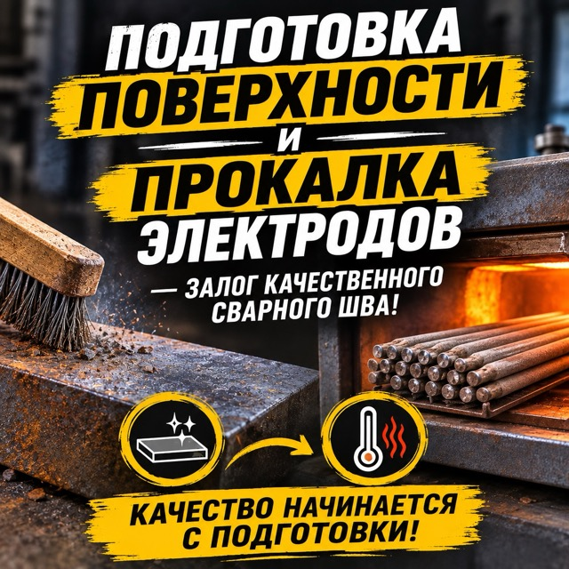

Электроды для ручной дуговой сварки коррозионно-стойких хромоникелевых сталей типа 18-10 — 12Х18Н10Т, 08Х18Н10Т, 08Х18Н12Б и подобных.
Наплавленный металл типа Э-08Х20Н9Г2Б, легированный ниобием. Это обеспечивает стойкость шва к межкристаллитной коррозии.
Ток и полярность
Только постоянный ток обратной полярности. Сварку ведут на минимально необходимых токах, чтобы не перегревать электрод и шов.

Обязательная прокалка
Перед работой электроды прокаливают при 300–350 °C в течение часа. Кромки очищают от масла и загрязнений, шов после сварки зачищают.
ПодходитАустенитные коррозионно-стойкие хромоникелевые стали — 12Х18Н10Т, 12Х18Н9Т, 08Х18Н10Т, 08Х18Н12Т, 08Х18Н12Б, 08Х18Н10, 03Х18Н11, 06Х18Н11 и зарубежные аналоги AISI 304, 321, 347. Рабочие температуры конструкций — до 450 °C.
Не подходитУглеродистые и низколегированные конструкционные стали, чугун, цветные металлы. Также не подходят стали с молибденом (например, AISI 316) и ферритные хромистые стали — для них нужны электроды другого типа.
Что это за электроды
ЦЛ-11 — электроды с основным покрытием для ручной дуговой сварки ответственных конструкций из коррозионно-стойких хромоникелевых сталей. По ГОСТ 10052-75 наплавленный металл соответствует типу Э-08Х20Н9Г2Б.
Ниобий в составе шва связывает углерод и защищает металл от межкристаллитной коррозии, поэтому такие электроды применяют там, где конструкция работает в агрессивных средах.
Основные плюсы
Стойкость шва к межкристаллитной коррозии;
сварка во всех пространственных положениях, кроме вертикального сверху вниз;
работа в агрессивных средах при температурах до 450 °C;
хорошая стойкость наплавленного металла к образованию трещин;
применимость для ответственных конструкций.
Основные ограничения
Только постоянный ток обратной полярности. Обязательна прокалка электродов перед работой и хранение в сухом месте.
Нержавеющая сталь плохо отводит тепло, поэтому токи нужно держать ниже, чем при сварке обычной стали, и избегать перегрева шва. Цена выше, чем у электродов для обычной стали.
Где применяют
Химическое, нефтехимическое и пищевое оборудование;
ёмкости, трубопроводы и теплообменники из нержавеющей стали;
конструкции, работающие в агрессивных средах;
ремонт и изготовление изделий из нержавейки.
Средние характеристики
Тип по ГОСТ 10052-75Э-08Х20Н9Г2Б
ПокрытиеОсновное (Б)
Предел прочности≥ 550 МПа
Относительное удлинение≥ 25%
Род тока= (обратная полярность)
Рабочая температурадо 450 °C
Положения сваркиВсе, кроме вертикального сверху вниз
Просушка300–350 °C, около 1 часа
Диаметры и сварочный ток
Ø 2 мм — 35–60 АØ 2,5 мм — 50–80 АØ 3 мм — 70–100 АØ 4 мм — 100–140 А